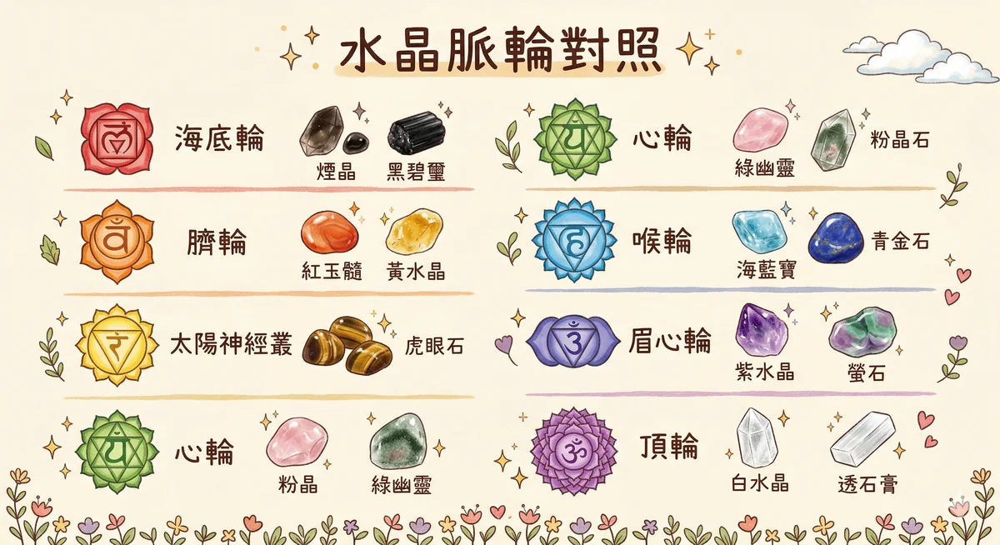

水晶身心调理 水晶身心调理 是透过矿物的晶格结构、壓電效應與色彩頻率影響人的情緒與能量狀態的身心練習，本質上結合了礦物學、色彩心理學與神經錨點理論。
馥靈之鑰不把水晶當成魔法，把它當成「神經系統的可攜式錨點」— 一塊戴著的水晶就是一個你隨時可以觸發的情緒狀態開關。
水晶不是魔法，是物理学
提到水晶，很多人脑海里浮现的是水晶球、占卜、或者某个身心灵工作室里摆得整整齐齐的矿石。但水晶真正厲害的地方，不在神秘学，在物理学。
石英（也就是透明水晶的本体 SiO2）有一个被写进物理课本的特性：压电效应。你对它施加压力，它会产生电荷；反过来给它通电，它会以极其精准的频率振盪。你手机里的石英振盪器，就是水晶在工作。你的手錶、电脑、遙控器里面都有它。水晶不需要你相信它，它只是在做它的物理学。
- 压电效应｜石英晶体受压产生电荷，這是手錶和电子元件的基础技术。1880 年由居里兄弟发现，不是玄学，是諾贝爾等级的物理学。
- 晶格结构｜每种矿物的原子排列方式不同，决定了它如何折射光线、呈现什麼颜色。紫水晶的紫色来自铁离子，不是什麼神秘力量，是化学。
- 莫氏硬度｜从 1（滑石）到 10（钻石）的分级系统。硬度决定了水晶的耐久度和保养方式，也是辨别真假的基本工具。
- 化学成分｜SiO2 是石英家族的基底，加入不同微量元素就变成不同颜色和性质。碧璽同时具有压电和焦电两种效应，在矿物学里是独特的存在。
20 支常用水晶个论
点开每一张卡片，看看那颗石头的科学身分证。化学式、硬度、脉轮对应、精油搭配，还有一句话让你记住它的个性。不需要全部买齐，找到跟你有感觉的那一两颗就够了。
透明水晶 Clear Quartz
科学身分证
纯二氧化硅结晶，压电效应的代表矿物。全球电子产业每年消耗数万噸石英，从手錶到卫星通讯都靠它的精准振盪频率。
情绪主题
清晰与放大。像一面乾净的镜子，把你心里模糊的念头照清楚。不是给你新东西，是帮你看见已经在那里的东西。
对应精油
乳香 Frankincense — 同样被称为「万用精油」，两个万用的组合，简单但有力。
脉轮对应
顶轮，但因为本身是「放大器」的角色，其实哪个脉轮都能搭。不确定要选什麼水晶的时候，先拿這颗。
紫水晶 Amethyst
科学身分证
石英家族的紫色成员，颜色来自铁离子（Fe³⁺）在晶格中的輻射效应。高温会让紫水晶褪色甚至变黄，市面上有些「黄水晶」其实是加热处理过的紫水晶。
情绪主题
直觉与静心。脑子轉太快停不下来的时候，紫水晶的紫色光波本身就有鎮静的视觉效果。不是催眠，是让你的大脑慢下来。
对应精油
熏衣草 Lavender — 助眠界的双王组合。放在枕头边，滴一滴熏衣草在扩香石上，跟紫水晶放一起。
脉轮对应
眉心轮。对应脑下垂体，荷爾蒙的总指揮。直觉不是玄的东西，是你的大脑在快速处理大量资讯后给你的结论。
粉水晶 Rose Quartz
科学身分证
粉色来自微量的鈦（Ti）或錳（Mn）。结构比一般石英更细密，通常呈半透明块状而非明显的晶体形态。紫外线長期照射会让粉色褪掉，放在窗边要小心。
情绪主题
自愛与温柔。不是那种甜膩的愛情石，是「你可以对自己好一点」的提醒。对自己太严格的人，桌上放一颗粉水晶看看。
对应精油
玫瑰 Rose — 两个「愛」的代表放在一起。玫瑰精油不便宜，但聞一次你就知道为什麼。
脉轮对应
心轮。对应胸腺，免疫系统的总部。一个人長期不被愛或不愛自己，免疫力真的会下降，這不是比喻。
黄水晶 Citrine
科学身分证
天然黄水晶很稀少，市面上大部分是紫水晶加热处理变色的产品。天然款颜色偏淡黄到煙黄，加热款通常是浓烈的橘黄。知道這件事不是为了批判，是让你买东西的时候心里有数。
情绪主题
自信与丰盛。被叫「商人石」是因为黄色对应太阳神经叢，你的「我可以」中心。自信的人不是运气好，是敢做决定。
对应精油
檸檬 Lemon — 清新、明亮、让人瞬间清醒。早上聞一下檸檬精油，跟喝一杯檸檬水一样提神。
脉轮对应
太阳神经叢。对应胰腺。紧张的时候胃会缩起来，就是這个区域在反应。
煙水晶 Smoky Quartz
科学身分证
煙色来自铝离子取代硅后受到天然輻射影响。有些煙水晶是人工輻照处理的，颜色会比天然的更均勻、更深。苏格兰的国石就是煙水晶。
情绪主题
接地与排放。焦虑的本质是「飄在空中」，太多想法没有落地。煙水晶的视觉重量感可以帮你把注意力拉回身体。
对应精油
岩兰草 Vetiver — 精油界最接地的气味。泥土、根部、厚重。跟煙水晶搭在一起，双倍接地。
脉轮对应
海底轮。对应腎上腺。焦虑的时候腎上腺素分泌过多，接地是让身体知道「你现在是安全的」。
黑曜石 Obsidian
科学身分证
严格来说黑曜石不是「水晶」，它是火山熔岩急速冷却形成的天然玻璃，没有结晶结构。古代人用它做箭头和手术刀，黑曜石刀片的鋒利度可以达到分子等级，比现代手术刀还薄。
情绪主题
保护与真相。像一面黑色的镜子，逼你看见不想面对的东西。不温柔，但很誠实。准备好了再拿起来。
对应精油
雪松 Cedarwood — 沉稳、有力、像一棵大树。面对真相需要勇气，雪松给你那个稳定的后盾。
脉轮对应
海底轮。安全感不只是「感觉安全」，也是「有能力面对不安全」。黑曜石走的是后面這条路。
虎眼石 Tiger's Eye
科学身分证
虎眼石的「貓眼效应」来自纤维状石英取代了青石棉的结构，光线沿著平行纤维反射产生流动光带。這个光学现象叫做「chatoyancy」，跟貓的眼睛原理类似。
情绪主题
勇气与判断。适合在重大决策前使用。不是告訴你答案，是帮你稳住情绪，让你用清醒的头脑去分析。
对应精油
迷迭香 Rosemary — 提升专注力和记忆力的精油，研究显示迷迭香的 1,8-桉油醇成分确实能增强认知表现。
脉轮对应
太阳神经叢。自信不是「我什麼都行」，是「我可以冷静地评估，然后做出选择」。
拉長石 Labradorite
科学身分证
拉長石最迷人的是「拉長石晕彩」（labradorescence），光线进入层状晶体结构后产生干涉效应，反射出藍、绿、金、紫的光芒。跟肥皂泡的彩虹原理一样，是薄膜干涉。
情绪主题
轉化与直觉。看起来平凡，轉个角度就光芒四射。很像有些人，外表低调但内在丰富得不得了。
对应精油
尤加利 Eucalyptus — 清透、穿透力强。帮你在混乱中找到那道光。
脉轮对应
喉轮。对应甲状腺。表达自我不只是说话，是敢让别人看见真实的你。
月光石 Moonstone
科学身分证
正長石的一种，内部的层状结构让光线产生「晕彩效应」（adularescence），呈现月亮般的藍白光芒。品质好的月光石那层藍光会在石头表面「游动」，很像水面上的月光。
情绪主题
阴性力量与情绪流动。不是叫你压住情绪，是让情绪像水一样流过去。月经期间特别适合握著它。
对应精油
依兰 Ylang Ylang — 甜而不膩的花香，放松副交感神经。两个「阴性」的组合，让你允许自己柔软。
脉轮对应
臍轮。对应性腺。不只是生殖功能，更是创造力和情绪流动的中心。
红瑪瑙 Carnelian
科学身分证
玉髓的一种，橘红色来自氧化铁。古埃及人称它为「落日之石」，用在护身符和印章上。它是隐晶质石英，结晶太细小肉眼看不到，所以表面特别光滑。
情绪主题
创造力与活力。像一杯浓缩咖啡，在你提不起勁的时候给你一股往前冲的动力。适合启动新计畫的时候。
对应精油
甜橙 Sweet Orange — 甜橙的气味让人开心不是迷信，是因为 d-limonene 会促进血清素分泌。开心就有动力。
脉轮对应
臍轮。创造力不只是畫畫写字，做一道新菜、換一条上班路线，都是创造力在动。
青金石 Lapis Lazuli
科学身分证
青金石不是单一矿物，是方鈉石族（lazurite）、黄铁矿（pyrite）、方解石（calcite）的混合岩。表面的金色斑点是黄铁矿，像星空里的星星。文艺复興时期磨成粉就是珍贵的群青色颜料（ultramarine）。
情绪主题
智慧与真理。适合在需要深度思考的时候使用。不是让你变聰明，是让你安静下来，好好想清楚一件事。
对应精油
快乐鼠尾草 Clary Sage — 帮助打开直觉通道。别被名字骗了，它不会让你傻笑，而是让你的思维变得清晰。
脉轮对应
眉心轮。脑下垂体管理全身荷爾蒙的分泌。智慧不只在脑袋里，身体的平衡也是一种智慧。
绿松石 Turquoise
科学身分证
含铜和铝的磷酸鹽矿物。藍色来自铜，绿色来自铁。硬度偏低而且多孔，会吸收皮膚油脂和汗水，戴久了颜色会变，這不是坏掉，是它在记录你的生活。市面上大量灌膠处理品，要小心辨别。
情绪主题
溝通与保护。戴在喉嚨附近，提醒你有话要说就说。美洲原住民视为聖石，波斯人认为它能挡灾，跨文化的共识就是「保护你说出真话」。
对应精油
薄荷 Peppermint — 清涼、直接、没有废话。薄荷打开呼吸道，让你的聲音更清亮。
脉轮对应
喉轮。甲状腺在這里。有些人甲状腺出问题的时候，往往也是「有很多话说不出口」的时期。身体很誠实。
螢石 Fluorite
科学身分证
氟化鈣结晶，「fluorescence」（螢光）這个英文字就是从螢石来的，因为它是第一个被发现在紫外线下会发光的矿物。颜色千变万化，一颗石头上可以同时出现三四种颜色。硬度只有 4，比较脆弱，要温柔对待。
情绪主题
专注与清理。脑袋里太多杂讯的时候，螢石像一个收纳盒，帮你把思绪整理好。学生族群特别适合放在书桌上。
对应精油
迷迭香 Rosemary — 「学生精油」配「学生水晶」，双倍专注力。期末考前的标配。
脉轮对应
眉心轮。专注力其实就是「你的脑下垂体在帮你过濾不重要的资讯」，让你把资源集中在重要的事情上。
瑪瑙 Agate
科学身分证
玉髓的带状变种，一层一层的纹路是不同时期的二氧化硅沉积形成的，每一层都是一段地质时间的纪录。就像树的年轮，瑪瑙的条纹记录了数百万年的地球历史。
情绪主题
稳定与平衡。不是那种「立刻让你感觉很强」的石头，是慢慢地、温和地让你稳下来。适合容易被环境影响情绪的人。
对应精油
广藿香 Patchouli — 厚重、土质、安稳。两个「慢慢来」的组合，让你不急不徐地回到中心。
脉轮对应
海底轮。不同颜色的瑪瑙其实可以对应不同脉轮，但整体来说，瑪瑙最擅長的还是「稳住你」。
碧璽 Tourmaline
科学身分证
碧璽的化学式极其复杂，含硼、铝、铁、鎂、鈉、鋰等多种元素。它是矿物界的「变色龙」，同一根晶体上可以出现完全不同的颜色（西瓜碧璽就是外绿内粉）。最特别的是它同时具有压电效应和焦电效应，受压产生电荷，受热也产生电荷。
情绪主题
净化与平衡。正因为它同时有两种电性效应，在物理层面确实会和环境中的静电产生互动。你有没有注意过碧璽特别容易吸灰尘？就是焦电效应在工作。
对应精油
天竺葵 Geranium — 平衡型精油的代表。皮膚油了它调节，乾了它也调节。跟碧璽一样，哪里需要平衡就往哪里去。
脉轮对应
心轮（粉碧璽/绿碧璽）。但不同颜色对应不同脉轮，黑碧璽走海底轮，藍碧璽走喉轮。碧璽大概是最不被单一脉轮綁住的宝石。
海藍宝 Aquamarine
科学身分证
绿柱石家族的藍色成员，跟祖母绿（Emerald）是亲戚。藍色来自铁离子。硬度 7.5-8，非常耐磨，适合做成日常饰品。名字来自拉丁文 aqua marina，意思就是「海水」。
情绪主题
勇气与清晰。古代水手把它带上船，相信它能保佑航行平安。用现代的话说，就是在混乱的情境中保持清醒判断力。
对应精油
尤加利 Eucalyptus — 清透的气味像海风一样穿透迷霧。呼吸道不通的时候聞尤加利，思路不通的时候握海藍宝。
脉轮对应
喉轮。不只是「说出来」，更是「在压力下依然能清楚表达自己」。海藍宝的功课比绿松石更进階。
石榴石 Garnet
科学身分证
石榴石不是单一矿物，是一个大家族。化学式中 X 和 Y 可以是不同金属离子，所以颜色从红到橙到绿都有。名字来自拉丁文 granatum（石榴），因为结晶長得像石榴籽。工业上用做研磨料，硬度够但不会刮伤大部分表面。
情绪主题
生命力与热情。冬天特别适合，深红色本身就有视觉上的温暖感。当你觉得日子过得像黑白的时候，石榴石是那抹红色。
对应精油
薑 Ginger — 暖身、促进循环、从里面热起来。冬天的手脚冰冷，从石榴石和薑精油开始。
脉轮对应
海底轮。生存的基本动力，「活下去，而且活得有勁」。石榴石帮你找回那股生命力。
孔雀石 Malachite
科学身分证
含铜的碳酸鹽矿物，那些美丽的绿色同心圓纹路是铜在不同条件下层层沉积形成的。硬度只有 3.5-4，非常软，不能泡水（会释出铜离子）。古埃及人用它磨成眼影，克丽奧佩脫拉的绿色眼妆，就是孔雀石粉。
情绪主题
轉化与保护。特别适合正在处理旧伤的人。不是撕开伤口，是陪你慢慢让伤口愈合。心里有结的时候，看著孔雀石的纹路，一圈一圈的，像在告訴你「慢慢来」。
对应精油
天竺葵 Geranium — 温柔但有力量的花香。不会逼你面对什麼，但会陪在你旁边。
脉轮对应
心轮。胸腺管理免疫力，而免疫力跟情绪压力有直接关联。心里的伤，真的会反映在身体上。
白水晶簇 Crystal Cluster
科学身分证
多根石英晶体从共同的基底向外生長形成的群体。每根晶体都是完美的六角柱结构，這是 SiO2 分子在慢速冷却条件下的自然排列方式。晶簇的表面积大，如果压电效应确实存在微弱的场域影响，那晶簇就是「面积最大化」的版本。
情绪主题
净化空间。放在客厅、办公桌或臥室，视觉上就有「乾净」的感觉。不管是不是心理作用，一个让你看了舒服的空间，本身就有价值。
对应精油
橙花 Neroli — 精油界的「高级感」。滴在扩香石上放在水晶簇旁边，整个空间的质感就不一样了。
脉轮对应
顶轮。白水晶簇比较少贴身佩戴，更多是放在空间里，像一个安静的存在。
黑碧璽 Black Tourmaline
科学身分证
碧璽家族中含铁量最高的品种，富含铁和鎂。焦电效应让它在温度变化时产生电荷，這意味著它确实会跟环境中的静电和微弱电磁场产生物理互动。有些实验室会用碧璽做静电偵测器。放在电脑旁边不是迷信，是有物理基础的。
情绪主题
保护与接地。如果说煙水晶是「温和地接地」，黑碧璽就是「直接插地线」。在高压环境、人多的场所，握著它会有一种「把自己圈起来」的安全感。
对应精油
雪松 Cedarwood — 稳固、有力、不动如山。黑碧璽配雪松，是最强的接地组合。
脉轮对应
海底轮。「保护」不是躲起来，是在有屏障的状态下，你反而能更放心地打开自己。
水晶 × 脉轮 × 精油 三角对照表

一张表看完三套系统的对应关係。存起来当速查卡用。
| 脉轮 | 颜色 | 对应水晶 | 对应精油 | 情绪主题 |
|---|---|---|---|---|
| 顶轮 | 紫/白 | 透明水晶、白水晶簇 | 乳香、橙花 | 清晰、净化、连结 |
| 眉心轮 | 靛/紫 | 紫水晶、青金石、螢石 | 熏衣草、快乐鼠尾草、迷迭香 | 直觉、智慧、专注 |
| 喉轮 | 藍 | 拉長石、绿松石、海藍宝 | 尤加利、薄荷 | 表达、溝通、勇气 |
| 心轮 | 绿/粉 | 粉水晶、碧璽、孔雀石 | 玫瑰、天竺葵 | 自愛、平衡、轉化 |
| 太阳神经叢 | 黄 | 黄水晶、虎眼石 | 檸檬、迷迭香 | 自信、判断、丰盛 |
| 臍轮 | 橘 | 月光石、红瑪瑙 | 依兰、甜橙 | 创造力、情绪、活力 |
| 海底轮 | 红/黑 | 煙水晶、黑曜石、瑪瑙、石榴石、黑碧璽 | 岩兰草、雪松、广藿香、薑 | 安全感、接地、保护 |
水晶保养基础
水晶买回来不是放著就好。了解基本保养，才能让它們陪你更久。這里講的是科学上说得通的保养方法。
净化方式
- 流动清水冲洗，物理上移除灰尘和油脂，最直接有效
- 月光照射，紫外线比阳光弱，不会让水晶褪色
- 聲音（頌缽/音叉），聲波振动是物理现象，不是玄学
- 透石膏（Selenite）放在旁边，是否有「净化」效果待验证，但至少不会伤害水晶
科学说法：大部分「净化」本质上是心理重置，你做了一个仪式性动作，告訴自己「重新开始」。但這不代表没用，心理重置本身就有实际效果。
存放注意
- 紫水晶、粉水晶避免長时间阳光直射，紫外线会让铁离子的色彩中心被破坏，颜色慢慢褪掉
- 硬度低的水晶（螢石 4、孔雀石 3.5）单独收纳，避免被硬度高的刮伤
- 碧璽容易吸灰（焦电效应），定期用软布擦拭
- 随身佩戴的水晶定期清水冲洗，去掉汗水和油脂
不能碰水的水晶
- 透石膏 Selenite（硬度 2，遇水溶解）
- 孔雀石 Malachite（铜离子遇水释出，有毒性）
- 青金石 Lapis Lazuli（多孔，会吸水变色）
- 绿松石 Turquoise（多孔，吸水后会变色不可逆）
- 铁虎眼 Iron Tiger's Eye（含铁，泡水会鏽蝕）
口诀：不确定就不泡。用乾布擦永远不会错。
辨别真假的基本功
- 摸温度，天然石头拿起来是涼的，塑膠和树脂是温的
- 看气泡，玻璃仿品里面常有圓形气泡，天然水晶没有
- 测硬度，石英类（硬度 7）可以划玻璃（硬度 5.5），划不动就有问题
- 问价格，天然紫水晶洞不会一两千块，太便宜的先存疑
水晶入门购买指南
你不需要一整柜水晶。一颗放在枕头旁，一颗放在办公桌，就够了。以下是给第一次买水晶的人的实用建议，不推销、不神化，只说真话。
第一颗买什麼
如果只能买一颗，选這两个之一：
- 透明水晶（白水晶），万用。放哪里都可以，搭什麼都不冲突。它的压电效应最稳定（因为结构最纯），价格也最亲民。像一件白 T-shirt，不会出错。
- 紫水晶，助眠最有感。放在枕头旁边，很多人反应「睡眠品质真的有差」。這当然可能是安慰剂效应，但如果安慰剂能让你睡好，为什麼不用？紫水晶的紫色来自铁离子和輻射作用（天然的），光是那个颜色就有视觉上的鎮静效果，色彩心理学研究显示紫色系会降低心率和呼吸频率。
预算要多少
- 入门水晶（手持大小，3-5公分）：NT$200-500 / RM30-80 就能买到品质不错的
- 不需要买「顶级」或「收藏级」。你买的是日常觉察工具，不是投资标的
- 手链和吊墜比原石贵（因为加工费），但入门水晶原石就很够用了
- 第一次买不要超过 NT$1,000，先确认你会不会用再说
去哪里买
- 信譽好的水晶专卖店，店员能告訴你产地、莫氏硬度、矿物组成的那种
- 矿物展，选择最多、价格通常比店面便宜，台湾每年有好幾场
- 避免：路边摊、夜市、来路不明的网路卖家。不是说一定是假的，但你没办法验证
- 看 Google 评价，找有实体店面、愿意退換的卖家。正规卖家不怕你问问题
怎麼判断真假
- 温度，天然水晶拿起来是涼涼的，而且回温慢。玻璃也是涼的，但回温很快。塑膠和树脂拿起来是温的。
- 重量，天然水晶比同体积的玻璃重。石英的比重是 2.65，一般玻璃是 2.5。拿在手里会有「沉甸甸」的感觉。
- 气泡，拿起来对著光看，如果里面有圓形的小气泡，那是玻璃。天然水晶里面可能有「棉絮」（内含物）、裂纹、或者矿物包裹体，但不会有完美的圓形气泡。
- 价格，太便宜一定有问题。一颗「天然紫水晶洞」卖两三百块？不可能。便宜的要嘛是染色的、要嘛是人造的、要嘛根本不是紫水晶。
最可靠的方式：买了之后拿去给懂的人看。很多水晶店提供免费鉴定服务，珠宝鉴定所也可以做。如果卖家不愿意让你拿去鉴定，那就不要买。
水晶 × 日常情境速查
不想背水晶的功能表？没关係。直接从你现在的状况出发，找到对应的水晶就好。以下是 6 个最常见的日常情境，和对应的水晶使用方式。
开会前需要自信
拿一颗虎眼石握在手里。虎眼石的纤维结构会在光线下产生「貓眼效应」（chatoyancy），那个移动的光带会自然吸引你的视线，帮你从焦虑的思绪中跳出来。它的莫氏硬度是 7，握起来有存在感。
怎麼用：开会前 3 分钟，把虎眼石握在慣用手里，感受它的重量和温度从涼变暖。不需要许愿或冥想，就是握著。你的注意力会从「等一下会不会出错」轉移到手掌的触感上。认知行为治疗里管這个叫「接地技巧」（grounding technique）。
失眠睡不著
把一颗紫水晶放在枕头下面或床头柜上。紫色在色彩心理学中是最具鎮静效果的颜色之一，而紫水晶的涼感和重量会成为你的「睡眠仪式」的一部分，大脑喜欢固定的流程，当你每天躺下来摸到那颗涼涼的紫水晶，它就会变成「該睡了」的信号。
怎麼用：躺下来后，把紫水晶握在手里或放在额头上。做三次深呼吸，每次吐气的时候感受水晶的涼感。通常到第三次呼吸的时候，你的肩膀已经松了。然后把水晶放在旁边，闭上眼睛。
跟人吵架后
拿一颗粉水晶放在心口的位置。粉水晶的淡粉色对应心轮，不管你信不信脉轮，粉红色在视觉上就是会让人的攻击性降低，美国监獄系统曾经实验过把牢房漆成粉红色（Baker-Miller Pink），结果暴力事件确实减少了。
怎麼用：找一个安静的地方坐下来。把粉水晶放在胸口，一隻手轻轻盖住它。不需要想「原諒对方」或「放下」，那些是后面的事。现在只需要做一件事：允许自己生气。生气是正常的。等你允许自己生气了，那个气反而会慢慢消退。
考試前要专注
把一颗螢石（Fluorite）放在书桌上。螢石有一个很特别的性质，它在紫外线下会发出螢光（fluorescence 這个词就是从 fluorite 来的）。它的结构是完美的立方体晶系，视觉上非常「有序」，放在混乱的书桌上有种奇妙的整理效果。
怎麼用：读书读到脑袋打结的时候，拿起螢石看一下它的纹理和颜色层次。螢石常常有紫色、绿色、透明的漸层，光是观察這些细节就能让你的脑袋暫时从高压模式切出来，休息 30 秒再回去，效率反而更好。這个原理类似「微休息」（micro-break），研究显示每 25-50 分钟的专注后做一个 30 秒的视觉轉換，可以恢复注意力资源。
觉得没有安全感
握一颗煙水晶（Smoky Quartz）在手里。煙水晶的深褐色来自天然輻射对石英中铝离子的作用，它的颜色本身就带有「沉稳」「落地」的视觉暗示。很多人说握煙水晶的感觉像「抱著一棵老树」，那个厚重感让你觉得有依靠。
怎麼用：不安的时候，把煙水晶握在手心里，另一隻手盖住。感受它的重量和温度。然后做一个简单的 5-4-3-2-1 接地练习：说出 5 个你看到的东西、4 个你摸到的（包括手里的煙水晶）、3 个你聽到的、2 个你聞到的、1 个你尝到的。這是焦虑急救的标准技巧，煙水晶只是帮你在触觉上多了一个「錨点」。
要做重大决定
把一颗透明水晶（白水晶）放在眉心位置，躺下来 3 分钟。透明水晶的「透明」本身就是一个隐喻，让你看清楚。眉心的位置对应松果体，松果体被称为「第三隻眼」不是因为玄学，而是因为松果体在演化早期确实是一个感光器官（某些爬虫类至今仍保留這个功能）。
怎麼用：躺下来，把水晶放在两眉之间（可以用一条毛巾固定）。闭上眼睛，把那个要做的决定在脑海里过一遍，但不要「想」，只是「看」。像看一部关于别人的电影一样看著那个决定。3 分钟后起来，你不一定有答案，但你会发现你的情绪比较清楚了，你知道自己「想」怎麼做，只是之前被各种顾虑盖住了。
认知水晶觉察
就像认知芳疗一样，你不需要手边有精油，光是「想到」那个气味，大脑就已经在回应了。水晶也是。
想到薄荷，嘴里会有沁涼感。想到酸梅，唾液就开始分泌。這不是玄学，是神经科学，你的大脑根据过去的经验建立了感觉记忆迴路，只要触发這个迴路，身体就会产生真实的生理反应。
现在闭上眼睛，想像你的手里握著一颗紫水晶。冰涼的、光滑的、沉甸甸的。你的手指感受到它的轮廓，那个清透的紫色彷彿在掌心里微微发光。感觉到了吗？你的肩膀是不是松了一点？
這就是认知水晶觉察的核心。你不需要花幾千块买一颗完美的紫水晶，你的大脑已经知道「紫水晶 = 放松」這个连结了。当然，如果你真的有一颗，握在手里的触觉回饋会让這个连结更强烈。但没有也没关係。
這也是为什麼馥灵之钥的觉察系统可以在线上运作。牌卡触发颜色记忆、水晶触发触觉记忆、精油触发嗅觉记忆，三种感官通道同时启动，觉察就已经真实发生了。不需要到场，不需要特定空间。你在捷运上都可以做一次三分钟的认知水晶觉察。